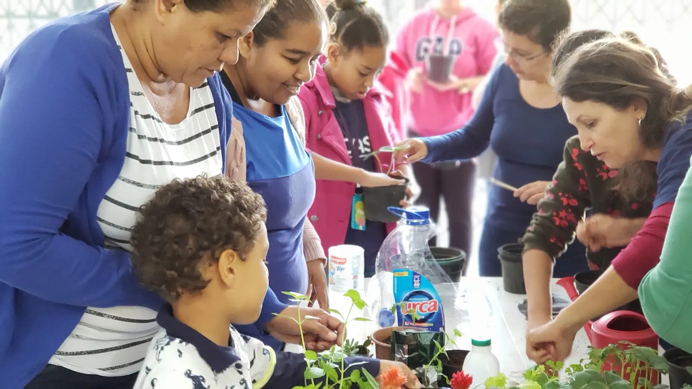
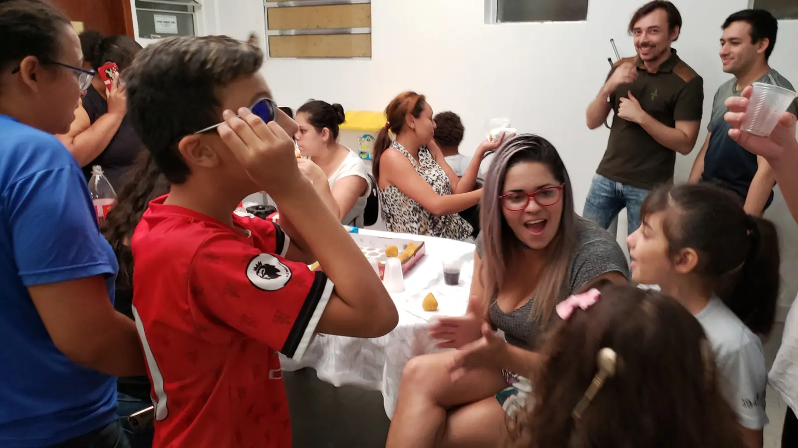
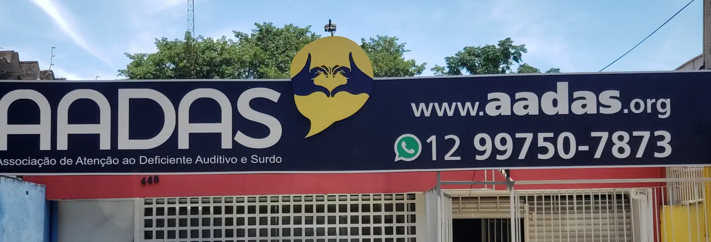

Missão
Fortalecer a comunidade surda de São José dos Campos com atenção à sua diversidade por meio de ações que proporcionem comunicação e acessibilidade.
Onde as famílias da Comunidade Surda encontram acolhimento, conhecimento, cidadania, acessibilidade e comunicação.
Para os ouvintes, uma ponte para ir ao encontro da Comunidade Surda 🤟🏻

Fortalecer a comunidade surda de São José dos Campos com atenção à sua diversidade por meio de ações que proporcionem comunicação e acessibilidade.
Tornar-se referência na área da surdez para que diferentes pessoas se comuniquem e se socializem entre duas línguas sem qualquer preconceito na região do Vale do Paraíba.
Através das nossas redes sociais.
Estatuto, parcerias com o poder público, demonstrações contábeis e relatórios de atividades da AADAS, todos reunidos no Portal da Transparência.

Um quarto do que recebemos vem da Nota Fiscal Paulista. Cada nota com CPF ajuda a manter as oficinas abertas.
No site da Nota Fiscal Paulista, escolha a AADAS como entidade. Parte do imposto das suas compras vem para cá, sem custo para você.
Divulgue nossas ações, ajude nos eventos ou atue nos programas, se já conhece um pouco de Libras.
Pessoas e empresas podem doar em dinheiro ou materiais. Toda doação entra no balanço publicado.
